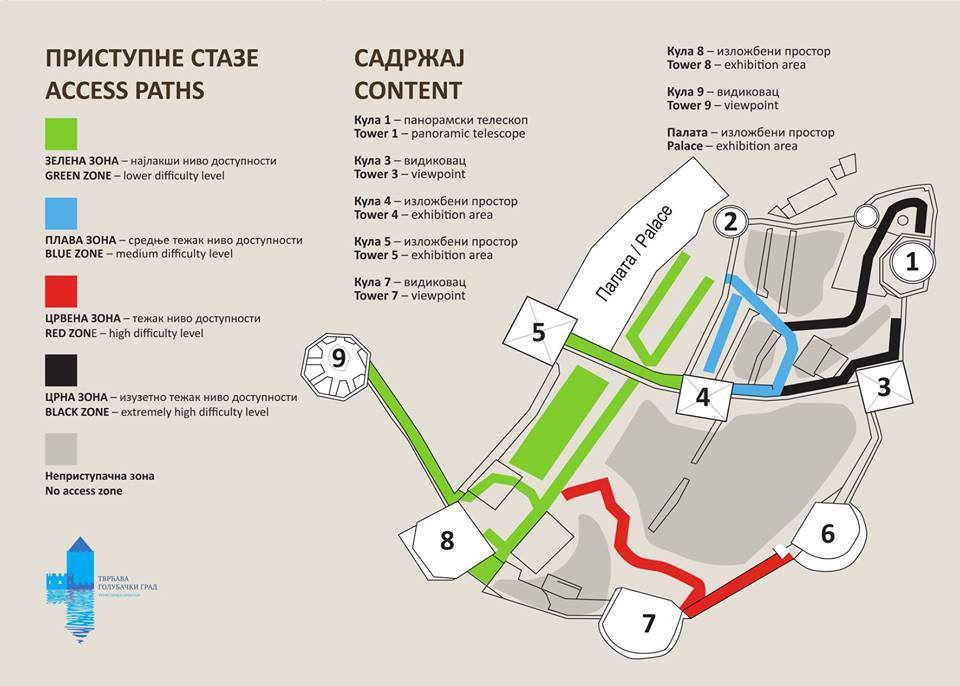

Početna
Galerija
Golubačka tvrđava
Unutrašnji raspored zona na Tvrđavi i cene:
- Zelena zona je dostupna svim kategorijama turista i obuhvata tri kule i Palatu. U Palati je smeštena digitalna prezentacija kompletne Tvrđave i u njoj se odvijaju prezentacije vodiča. Palata je dostupna i osobama sa inviliditetom odnosno osobama koje se kreću uz pomoć ili u kolicima. Kule nisu dostupne osobama koje se kreću uz pomoć kolica. U Ulaznoj kuli ili kuli 8, na sva tri sprata smeštena je izložba posvećena vitezovima. U Zelenu zonu mogu da uđu maloletna lica (deca) samo u pratnji roditelja. Za grupne posete obavezan je vodič Kompleksa Tvrđava Golubački grad.
Cene ulaznica:
- pojedinačna ulaznicа je 600 dinara (uključen i parking)
- grupna ulaznica iznosi 450 dinara (grupe 10+) obavezan je vodič Kompleksa Tvrđava Golubački grad
- školske ekskurzije – pojedinačna ulaznica 150 dinara (samo ulaz u Palatu)
- deca u pratnji roditelja (do 18 godina) – ulaz besplatan
- penzioneri (samo registrovana udruženja) - pojedinačna ulaznica je 300 dinara
- Plava zona je srednje teška zona i nije otvorena za samostalne posete turista već je dostupna samo uz pratnju posebnih pratilaca (zaposlenih) u Kompleksu. Staza zahteva viši nivo fizičke spremnosti posetilaca i na njoj mogu da borave u isto vreme samo grupe do 5 posetilaca. Ulazak i poseta ovoj zoni je zabranjena maloletnim licima.
- Cena pojedinačne ulaznice je 800 dinara.
- za plavu zonu omogućuje ulaz i u zelenu zonu.
- Crvena zona je teška zona i nije otvorena za samostalne posete turista već je dostupna samo uz pratnju posebnih pratilaca (zaposlenih) u Kompleksu. Staza zahteva veoma visok nivo fizičke spremnosti posetilaca i na njoj mogu da borave u isto vreme samo grupe do 5 posetilaca. Ulazak i poseta ovoj zoni je zabranjena maloletnim licima.
- Cena pojedinačne ulaznice je 800 dinara.
- Ulaznica za crvenu zonu omogućuje ulaz i u zelenu zonu.
- Crna zona je izuzetno teška zona i nije otvorena za samostalne posete turista već je dostupna samo uz pratnju posebnih pratilaca (zaposlenih) u Kompleksu. Staza zahteva najviši nivo fizičke spremnosti posetilaca i njome može da se kreće samo po jedan posetilac u pratnji pratioca iz Kompleksa. Zona nije preporučljiva osobama sa srčanim slabostima. Ulazak i poseta ovoj zoni je zabranjena maloletnim licima.
- Cena pojedinačne ulaznice je 1200 dinara.
- Ulaznica za crnu zonu omogućuje ulaz u zelenu i u plavu zonu.
